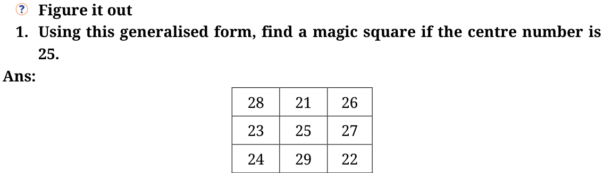
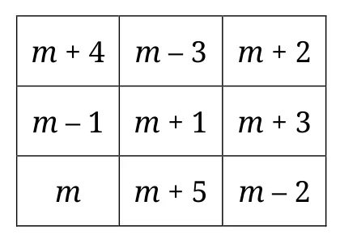
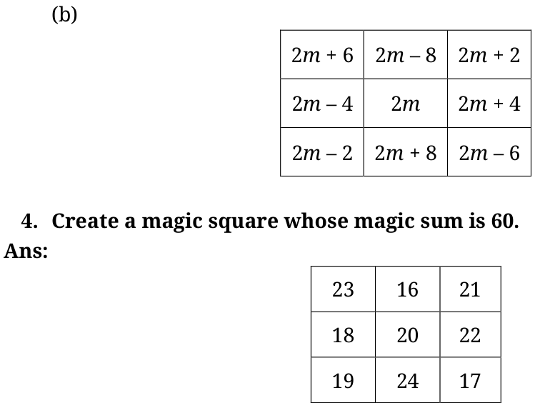
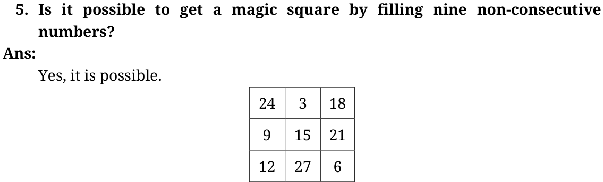

- What is the expression obtained by adding the 3 terms of any row, column, or diagonal?
The expression obtained \(= 3 \times m\)
where \(m\) is the letter-number representing the number in the centre.
- Write the result obtained by
- Adding 1 to every term in the generalised form.
- Doubling every term in the generalised form.
(a)



Try some more.
Write the next 3 numbers in the sequence:
1, 2, 3, 5, 8, 13, 21, 34, 55, 89, ____, ____, ____, …
If you have to write one more number in the sequence above, can you tell whether it will be an odd number or an even number (without adding the two previous numbers)?
\(55 + 89 = 144\), \(89 + 144 = 233\), \(144 + 233 = 377\)
The next number will be an even number.
What is the parity of each number in the sequence? Do you notice any pattern in the sequence of parities?
The parity patterns —
Sequence: 1(O), 2(E), 3(O), 5(O), 8(E), 13(O), 21(O), 34(E), …
The pattern is: Odd, Even, Odd, Odd, Even, Odd, Odd, Even…
The group odd, even, odd repeats.
\(3^{\text{rd}}\) term \(= 1^{\text{st}}\) term \(+ 2^{\text{nd}}\) term \(= O + E = O\);
\(4^{\text{th}}\) term \(= 2^{\text{nd}}\) term \(+ 3^{\text{rd}}\) term \(= E + O = O\);
\(5^{\text{th}}\) term \(= 3^{\text{rd}}\) term \(+ 4^{\text{th}}\) term \(= O + O = E\)…